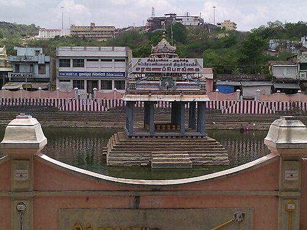

THIRUVALLUR
Thiruthani Murugan Temple

The Thiruthani Murugan Temple, located in Thiruvallur district, Tamil Nadu, is one of the six abodes (Arupadai Veedu) of Lord Murugan.It is built on a hill with 365 steps, symbolizing the days of the year.According to legend, this is where Lord Murugan married Valli and also attained peace after defeating the demon Surapadman.